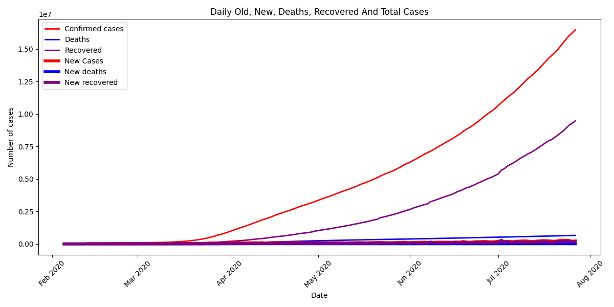
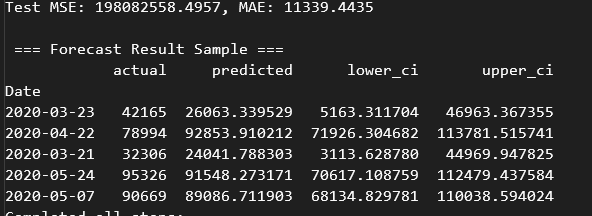

Covid19 Forecasting Prediction Model

This codebase implements an ARIMAX modeling pipeline for COVID-19 case forecasting across four modular components. The dataset processing (dataset.py) handles temporal COVID-19 statistics through datetime conversion, feature engineering (lag features, day/month indicators), and preprocessing pipelines featuring Robust Scaling and mean imputation. It maintains temporal integrity during train/test splits (80/20) while generating visualization plots of case trends.

The model component (model.py) automates ARIMA parameter selection using pmdarima's auto_arima and fits an ARIMAX model with exogenous variables. Trained models are persisted via joblib serialization. The training orchestration (train.py) executes the core workflow: data loading → preprocessing → model training → forecast generation with confidence intervals. The evaluation module (evaluate.py) calculates regression metrics (MSE, MAE), compares forecasted versus actual values visually, and plots confidence bands around predictions.
The system focuses on forecasting daily new COVID-19 cases using time-series techniques while maintaining temporal relationships through strict datetime indexing. It features automated model configuration via auto_arima, integrated visual diagnostics at multiple stages, and robust preprocessing pipelines. The implementation handles exogenous variables through ARIMAX and provides confidence interval estimates for forecasts. The modular design separates concerns while maintaining interoperability between data processing, modeling, and evaluation components.
In Conclusion:
- Dataset Processing: Handles COVID-19 time-series data with datetime conversion, lag features, and Robust Scaling.
- ARIMAX Modeling: Automates parameter selection via auto_arima and supports exogenous variables.
- Training Orchestration: Executes end-to-end workflow from data loading to forecasting.
- Evaluation: Calculates MSE/MAE metrics and generates forecast vs actual visualizations with confidence bands.
- Key Feature: Maintains temporal integrity through strict datetime indexing throughout the pipeline.
- Output: Forecasts daily new COVID-19 cases with confidence interval estimates.
View the source code at my Github here
Back to TimeSeries Projects